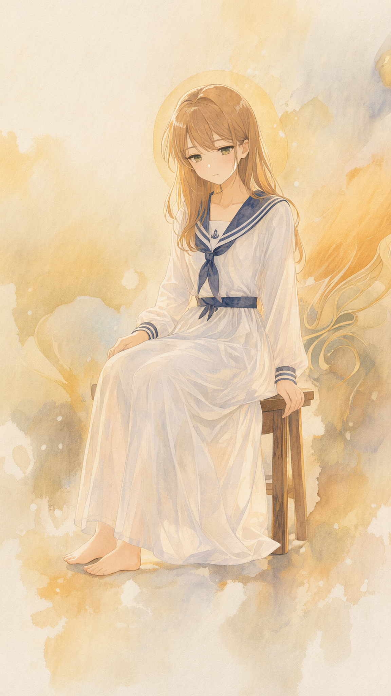
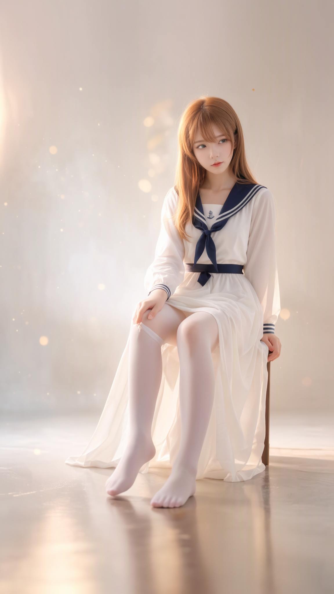
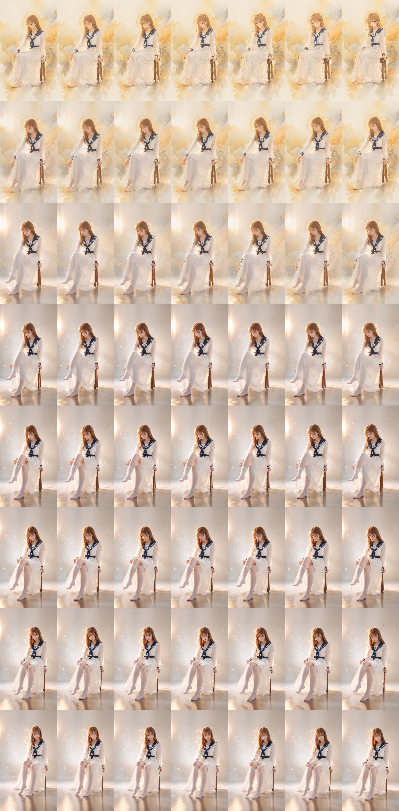

Draw Things 生图 → MiniMax H3 FL2VA 视频 → Looking Glass 全息 quilt · 作品集与管线文档
托管在 Looking Glass Blocks 的可交互 quilt,浏览器里直接拖动/摇头预览;在 LKG 设备上打开即为裸眼 3D。
90 帧旧序列的首尾帧重绘:首帧水彩动漫+穆夏装饰(静),尾帧写实照片+白裤袜(动),H3 在中间插值出「穿衣+画风渐变」的 2.3 秒。



完整可复跑配方。深度工具:DA3Depth-ShaderEdit(2.5D 重投影);首帧 yaw −5° / 尾帧 yaw +5°,配成 10° 视差弧。
| 槽位 | 参考图 | 权重 | 角色 |
|---|---|---|---|
| 1 | 首帧彩图(yaw −5° 重投影) | 32 | 构图+色彩 |
| 2 | DA3 深度图(同参) | 45 | 几何/视差 |
| 3 | 水彩纸纹(Animagine XL) | 7 | 笔触 ONLY |
| 4 | 穆夏风格图(flux klein2) | 12 | 风格(金线/光环) |
正向:Image 1 is the composition and color reference — keep the same medium shot, camera angle and seated pose. Image 2 is the depth map geometry reference — the final composition and layered depth follow the depth map exactly, including its rotation and shift; do not flatten the layering. Image 3 provides the watercolor paper texture and brushwork grain only. Image 4 sets the Art Nouveau painting style — flowing golden contour lines, a warm golden halo, decorative elegance; apply this style to the whole painting. Repaint: a gentle girl with long honey-brown hair and soft green eyes, wearing a white sailor-collar long dress with a navy blue neckerchief, sits quietly on a tall wooden stool. Exactly two legs, both bare feet resting flat and naturally on the floor, legs together and uncrossed; exactly two hands — one resting on her lap, the other on the stool edge; head slightly tilted down with a quiet shy expression. Painted as traditional watercolor and gouache on rough cold-press cotton paper: loose visible brushstrokes, pigment granulation, wet-on-wet bleeds and blooming edges in the warm background, dry-brush texture on the dress folds, flowing Art Nouveau contour lines woven through her hair, a soft golden halo behind her head. Strong depth layering for parallax: the girl and stool in the midground with the richest brush detail, the foreground floor dissolving into broad pale washes toward the bottom of the frame, the background as soft atmospheric haze with drifting dust and gentle bokeh, warm golden rim light separating her hair and shoulders from the background. Warm ivory and antique gold palette, soft diffused lighting, high detail, no text.
负向:lowres, bad anatomy, extra limbs, extra legs, extra feet, extra fingers, deformed hands, crossed legs, smooth digital airbrush, cel shading, flat vector look, 3d render, overly clean, plastic skin, blurry subject, flat lighting, flat depth, text, watermark, signature
| 槽位 | 参考图 | 权重 | 角色 |
|---|---|---|---|
| 1 | 尾帧彩图(yaw +5° 重投影) | 30 | 写实风格+色彩 ONLY |
| 2 | DA3 深度图(同参) | 50 | 几何/视差/方向锚 |
正向:Image 1 is the realistic photographic style and color reference — warm ivory palette, soft diffused studio lighting, natural photo grain; take this look only, do not copy its composition. Image 2 is the depth map geometry reference — the final composition and layered depth follow the depth map exactly, including its rotation and shift; do not flatten the layering. Repaint as a realistic photograph: a gentle girl with long honey-brown hair and soft green eyes, wearing a white sailor-collar long dress with a navy blue neckerchief, sits on a tall wooden stool. Her LEFT leg toward the left side of the image is lifted and bent, already wearing sheer white pantyhose with a smooth clean fabric surface, toes softly pointed; her right foot stays bare and rests flat on the wooden floor, fully visible in the lower right area of the frame; one hand rests gently on her left thigh, the other grips the stool edge; she looks toward the viewer with a calm soft expression. Strong depth layering for parallax: tack-sharp focus on the girl, the foreground floor softly blurred toward the bottom of the frame, a warm bright studio background with shallow depth of field, drifting dust particles and large soft golden bokeh far behind her, warm rim light outlining her hair and shoulders. Natural skin texture, subtle silk sheen on the pantyhose, 85mm lens look, realistic, high detail, no text.
负向:lowres, bad anatomy, extra limbs, extra legs, extra feet, extra fingers, deformed hands, deformed feet, melted foot, loose dangling fabric, bunched cloth, crossed legs, knee-high socks, ankle socks, both feet bare, right foot in pantyhose, both legs fully dressed, anime, illustration, cel shading, 2d, flat colors, 3d render, plastic skin, blurry subject, flat lighting, flat depth, text, watermark, signature
| 项 | 值 |
|---|---|
| 模式 | Edit / FL2VA(Text-to-Video 会静默忽略参考图) |
| 规格 | 576×1024 · 56 帧 ≈2.3s @24fps |
| 采样 | Steps 4 + H3 Turbo LoRA @44% · DDIM Trailing · Shift 12 · Audio Shift 3 · Guidance 1.0 · TeaCache OFF |
Style contract: the clip begins as a warm ivory watercolor-and-gouache anime painting — soft paper grain, loose brushstrokes, a golden Art Nouveau halo behind the girl's head — and smoothly becomes a realistic photograph by the end; the same girl, the same white sailor-collar dress with navy neckerchief, the same tall wooden stool and the same warm studio background stay consistent the whole time.
[0s-0.7s] She sits quietly on the tall wooden stool, both bare feet resting together on the floor, head slightly tilted down, almost still — only her hair tips and the watercolor background washes breathe faintly.
[0.7s-1.4s] She gently lifts and bends her LEFT leg forward, sliding one hand onto her left thigh; her right foot stays planted flat on the floor, uncrossed.
[1.4s-2.3s] A sheer white pantyhose is drawn up along her raised left leg, the fabric becoming visible progressively from ankle to thigh, her toes softly pointed; meanwhile the watercolor texture gradually gives way to photographic realism; she raises her eyes toward the viewer with a calm soft expression.
Camera: the camera holds a steady medium shot with no cuts; the viewpoint drifts only very slightly along the natural arc between the two endpoint frames — she only appears to shift because of this subtle viewpoint drift, she does not slide across the floor.
Audio: quiet warm room tone throughout; a soft fabric rustle begins at 1.2s as the pantyhose is drawn up; no music, no voices.
Text: no text, no subtitles, no watermark, no logo.
Negative: no cuts, no dissolves, no scene change, no motion blur, no teleporting, no extra limbs, no flickering, no objects popping in.